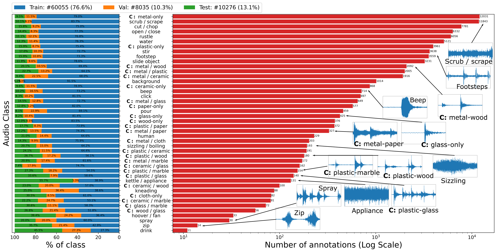

Download Data
Downloading annotations
The dataset is now publicly available for download from here
Paper and Citation
When using these annotations, cite our paper (available on ArXiv):
@inproceedings{EPICSOUNDS2022,
title={{EPIC-SOUNDS}: {A} {L}arge-{S}cale {D}ataset of {A}ctions that {S}ound},
author={Huh, Jaesung and Chalk, Jacob and Kazakos, Evangelos and Damen, Dima and Zisserman, Andrew},
booktitle = {ArXiv},
year = {2022}
} @ARTICLE{Damen2022RESCALING,
title={Rescaling Egocentric Vision: Collection, Pipeline and Challenges for EPIC-KITCHENS-100},
author={Damen, Dima and Doughty, Hazel and Farinella, Giovanni Maria and and Furnari, Antonino
and Ma, Jian and Kazakos, Evangelos and Moltisanti, Davide and Munro, Jonathan
and Perrett, Toby and Price, Will and Wray, Michael},
journal = {International Journal of Computer Vision (IJCV)},
year = {2022},
volume = {130},
pages = {33–55},
Url = {https://doi.org/10.1007/s11263-021-01531-2}
} Disclaimer
The underlying data that power EPIC-SOUNDS, EPIC-KITCHENS-100, were collected as a tool for research in computer vision. The dataset may have unintended biases (including those of a societal, gender or racial nature).
Copyright 
The EPIC-SOUNDS dataset is copyright by us and published under the Creative Commons Attribution-NonCommercial 4.0 International License. This means that you must give appropriate credit, provide a link to the license, and indicate if changes were made. You may do so in any reasonable manner, but not in any way that suggests the licensor endorses you or your use. You may not use the material for commercial purposes.
For commercial licenses of EPIC-KITCHENS, email us at uob-epic-kitchens@bristol.ac.uk